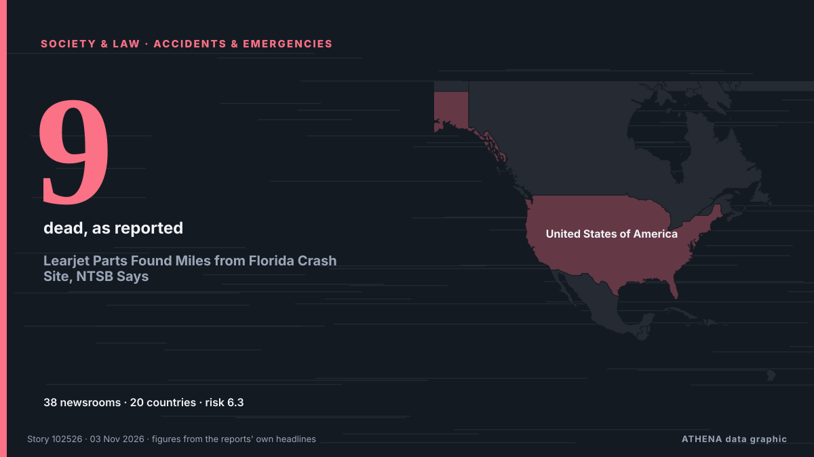

Learjet Parts Found Miles from Florida Crash Site, NTSB Says

Family of four, two close friends and nanny also died in crash as pilot identified as 55-year-old Jeff Gregory Family members on Monday identified a young Florida pilot as one of nine victims of a… de The Guardian
Relayé de façon indépendante par 38 médias dans 20 pays depuis le 2 nov. ; premier à l'annoncer : The Guardian ; la couverture est à son pic. ATHENA juge le risque élevé (6.3/10), surtout en raison de la gravité des dommages décrits et de sa portée géographique et sectorielle. La confiance est de 88 % (élevée) : 38 médias indépendants le confirment, avec une fiabilité moyenne des sources de 73 %. Médias par pays : Royaume-Uni (9), États-Unis (6), Irlande (4). Couverture : du 2 nov. au 3 nov., 14 heures.
Pourquoi c'est important: Les changements juridiques et politiques modifient droits, obligations et services publics pour les personnes concernées.
Ce qui a changé : 28 nouveaux articles de 21 rédactions dans les 24 heures jusqu'au 3 nov..
Premier titre : Investigators search for cause in Florida plane crash that killed all nine onboard
Les titres sont affichés en anglais, tels que publiés.
En un coup d'œil
Sélectionné, noté et rédigé par la méthodologie publiée d'ATHENA. Aucun rédacteur n'intervient sur un événement en particulier. Comment il est produit ›
| 02 Nov 14:17 UTC | 3 |
|---|---|
| 02 Nov 16:17 UTC | 7 |
| 02 Nov 18:17 UTC | 8 |
| 02 Nov 20:17 UTC | 9 |
| 02 Nov 22:17 UTC | 5 |
| 03 Nov 00:17 UTC | 7 |
| 03 Nov 02:17 UTC | 0 |
| 03 Nov 04:17 UTC | 6 |
| 03 Nov 06:17 UTC | 1 |
| 03 Nov 08:17 UTC | 2 |
| 03 Nov 10:17 UTC | 0 |
| 03 Nov 12:17 UTC | 1 |
| 03 Nov 14:17 UTC | 0 |
| 03 Nov 16:17 UTC | 2 |
| 03 Nov 18:17 UTC | 0 |
| 03 Nov 20:17 UTC | 6 |
| 03 Nov 22:17 UTC | 2 |
| 02 Nov 15:27 UTC | 3.9 |
|---|---|
| 02 Nov 17:04 UTC | 4.5 |
| 02 Nov 23:52 UTC | 6.3 |
| 03 Nov 01:05 UTC | 5.6 |
| 04 Nov 00:47 UTC | 6.3 |
| 04 Nov 00:47 UTC | 6.3 |
Pourquoi ces chiffres
Importance
Risque
Confiance
La couverture : qui l'a annoncé, et quand
titre tel que publié · ouvre l'original- The Guardian · Royaume-UniYoung co-pilot, 20, named as one of nine victims of deadly Florida plane crash
- France 24 English · FranceNine dead in small plane crash near Trump's Florida home
- Chronicle Live (Newcastle) · Royaume-UniLearjet co-pilot, 20, named after fatal Florida crash with chilling final 'we're out of time' message
- ProtoThema English ·‘I can’t drive, but I can fly’: Tragic story of 20-year-old co-pilot killed in Florida plane crash
- The Independent · Royaume-Uni20-year-old woman was part of team piloting plane that slammed into Florida street killing 9
- CBC News (alternative feed) · CanadaCouple, 2 children and a 20-year-old pilot among 9 dead in Florida crash
- Irish Mirror · IrlandeFlorida plane crash: Family named co-pilot, 20, after chilling final words heard on distress call
- Anadolu Agency (English) · TurquiePilot who got license in high school co-piloted plane that crashed in Florida: Report
- Manchester Evening News · Royaume-UniLearjet co-pilot heard screaming 'We're out of time' before fatal Florida crash named
- The Canadian Press (via CityNews) · CanadaVictims of Florida plane crash include a 20-year-old who got her pilot’s license as a teen
- Irish Mirror · IrlandePlane co-pilot sent chilling six-word text to boyfriend minutes before fatal crash
- Chronicle Live (Newcastle) · Royaume-UniFlorida co-pilot's chilling text to boyfriend minutes before tragic plane crash
- ABC News Australia · AustralieParts of jet appear to have broken off before fatal Florida crash
- Courthouse News · États-UnisEvidence indicates parts of jet broke off before Florida crash that killed 9, investigators say
- Sydney Morning Herald · AustralieCo-pilot identified in deadly US plane crash
- PBS NewsHour · États-UnisParts of a Learjet may have broken off midair before Florida crash that killed 9, investigators say
- BBC News · Royaume-UniWhat Florida jet audio and flight data tells us about its final moments
- The Hill · États-UnisWoman identifies daughter, 20, as one of the pilots on jet that crashed in Florida
- Irish Mirror · IrlandeFlorida horror plane crash kills 'married couple and two toddlers' with co-pilot, 20
- Livemint · IndeLearjet May Have Broken Up Before Fatal Florida Crash, NTSB Says
- Manchester Evening News · Royaume-UniTwo toddlers and multi-millionaire parents named as Florida Learjet crash victims
- Chronicle Live (Newcastle) · Royaume-UniFlorida plane crash victims named as couple and children among nine Learjet 60 dead
- Al Jazeera English · Qatar‘Work to do’: Authorities give update on Florida private jet crash
- Forbes Business · États-Unis20-Year-Old Co-Pilot Died In Florida Learjet Crash That Killed 9, Family Says
- Business Insider · États-UnisNASA administrator tells the internet to stop criticizing copilot of crashed Learjet 60
- Sydney Morning Herald · AustralieFlorida jet crash passengers and co-pilot identified as investigators hunt for clues
- The Independent · Royaume-UniTech entrepreneur, wife, kids and friends among victims in Florida plane crash
- MyJoyOnline · GhanaCopilot in deadly Florida jet crash identified in reports as 20-year-old
- Stuff · Nouvelle-ZélandeAll victims in horror Learjet crash identified
- New Straits Times · MalaisieWeather, Mayday call key to probe into Florida Learjet crash that killed nine
- Free Malaysia Today · MalaisieBad weather a ‘major’ focus of Florida plane crash probe
- PBS NewsHour · États-UnisNews Wrap: Parts of jet may have broken off before crash in Florida
- CNA (Channel NewsAsia) · SingapourInvestigators say Learjet may have broken up before crashing in Florida
- RTÉ News · IrlandeBad weather a 'major' focus of Florida plane crash probe
- Gulf News · Émirats arabes unisVictims of Florida plane crash include a 20-year-old copilot, tech entrepreneur and his family
- NDTV · IndeProbe Finds Learjet Parts Broke Up Before Florida Jet Crash
- Livemint · IndeFlorida Learjet crash victims identified: 20-year-old copilot, tech entrepreneur and his family among those killed
- NDTV · IndeLearjet Co-pilot Who Called 'Mayday' Before Florida Crash Was 20
- Daily Mirror · Sri LankaWho are the victims of the deadly Florida jet crash?
- The San Juan Daily Star · Porto RicoA 20-year-old was a pilot of the jetthat plunged to Earth in Florida